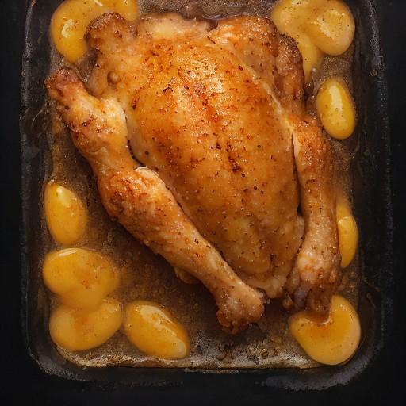

サイド
極厚カツ × 特製ハニーマスタード：悪魔の甘酸っぱさ炸裂！

超極厚カツに、特製ハニーマスタードソースを絡めて、悪魔的な甘酸っぱさとサクサク感の新しい世界を体験！
💡 こんな時・こんな人におすすめ！
パーティーや、特別な日にぴったり
📋 必要な材料（ポストイット風）
材料リスト 1
- 極厚カツ (1個)1個
- 特製ハニーマスタードソース (大さじ2)20ml
- バター (小さじ2)2g
材料リスト 2
- 塩 (小さじ1/2)1/2g
🍳 作り方ステップ
1
極厚カツを1cm間隔で並べて、バターで軽く焼き付ける。
2
特製ハニーマスタードソースを適量かけ、塩を振る。
3
フライパンで焼き上げながら、ハニーマスタードソースが染み渡るまで加熱する。
4
焼き上げたら、ソースをたっぷりかけて、食欲をそそる悪魔的な味わいに仕上げる。